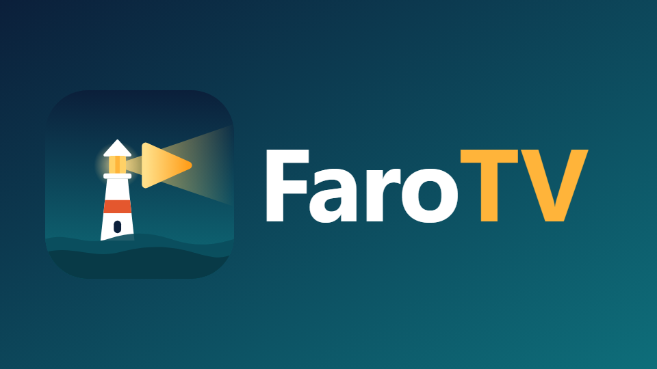
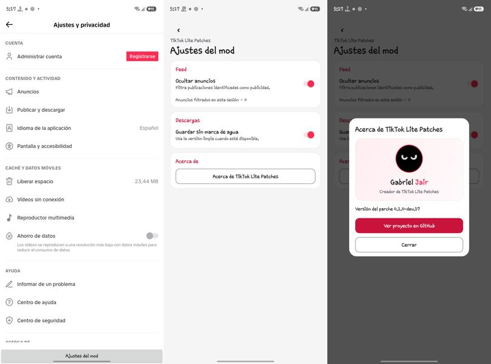

FaroTV
Bloqueo de anuncios, SponsorBlock y personalización del reproductor de YouTube en Android TV.
Parches independientes para personalizar YouTube en Android TV y TikTok Lite con Morphe.

Bloqueo de anuncios, SponsorBlock y personalización del reproductor de YouTube en Android TV.

Filtro de anuncios del feed y descargas sin marca de agua cuando hay una fuente limpia.